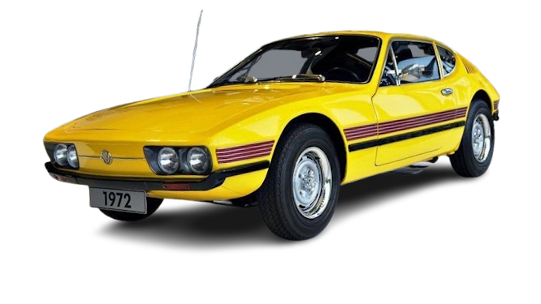

SP2
Um dos carros mais carcteristicos do Brasil, que com mais de 20 anos, ainda arraca elogios até os dias atuais.

HISTÓRIA
O Chevrolet Astra chegou ao Brasil inicialmente em 1994, importado da Bélgica (geração F, baseada no Opel Astra europeu).
Em 1998, a Chevrolet iniciou a produção nacional do Astra (geração G), em São José dos Campos (SP), consolidando-o como substituto do Kadett.
Em 2003, a GM lançou o Astra GSi hatch — um carro com espírito esportivo e acabamento mais refinado. Ele chegou para preencher o espaço deixado por modelos como o Kadett GSi e o Vectra GSi, e enfrentar rivais como o Golf GTI e o Peugeot 206 GT.
Motor 2.0 16V Ecotec (inicialmente a gasolina com 136 cv; depois flex com até 140 cv).
Câmbio manual de 5 marchas, com relações mais curtas Era um hatch médio esportivo acessível, bem construído e com bom desempenho — um “hot hatch” nacional de respeito.
Equilibrava conforto, robustez e desempenho sem abrir mão da confiabilidade mecânica da GM.
FICHA TECNICA
Modelo: SP2
Ano: 1972–1976
Motor: 1.7 boxer
Potência: 75 cv
Torque: 13,7 kgfm
0–100 km/h: ≈17 s
Vel. Máx: ≈161 km/h
Peso: 870 kg
Tração: Traseira
Câmbio: Manual 4 marchas
Dimensões (C×L×A): 4.220×1.620×1.150 mm
CURIOSIDADE
Em 2003, o Opel Astra V8 Coupé, desenvolvido pela Opel Performance Center (OPC), conquistou uma vitória marcante nas 24 Horas de Nürburgring. Uma das corridas de resistência mais exigentes do mundo, disputada no lendário circuito Nordschleife, na Alemanha. O Astra V8 superou favoritos como os Porsche 911 e BMW M3, demonstrando excelente confiabilidade, desempenho e preparação para a resistência. O carro era baseado na carroceria do Astra Coupé, mas com chassi tubular, tração traseira e motor V8 de cerca de 460 cv, desenvolvido especialmente para competições do DTM e provas de longa duração. Essa vitória foi histórica para a Opel, pois marcou a primeira conquista geral da marca na corrida de 24 Horas de Nürburgring, aumentando o prestígio do Astra como carro esportivo e consolidando o trabalho da OPC no automobilismo europeu.
GALERIA
Imagens do SP2
Canal: Renato Bellote